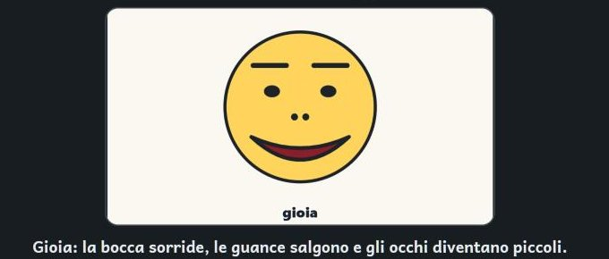
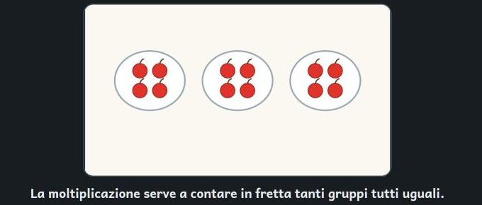
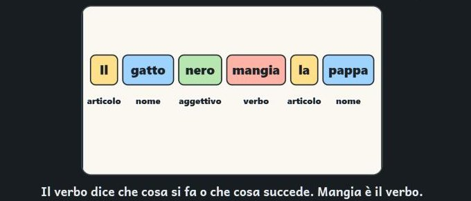
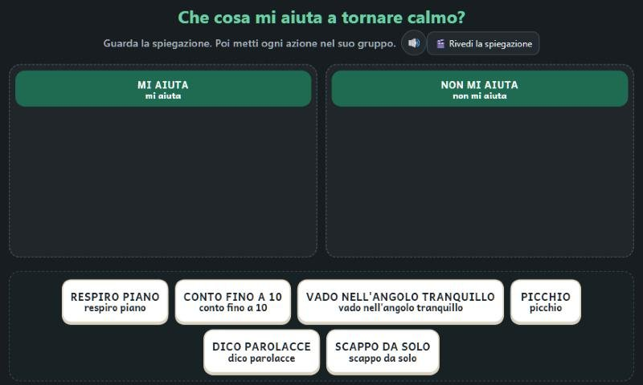

Come sono gli esercizi
Molti esercizi partono da una spiegazione animata, da guardare insieme alla LIM. Poi si gioca: si tocca la risposta, si trascina, si raggruppa.




Le parole si possono mostrare in stampato maiuscolo, in minuscolo, in corsivo o in due scritture insieme, come qui.
Non c'è il tempo che scade e non c'è «hai perso». Se serve, si tolgono le risposte sbagliate e si gioca senza errore.
Prova subito
Non serve registrarsi: basta aprire un link.
Matematica
Emozioni e storia
Tutti gli altri sono nel catalogo, divisi per materia e per livello.
Pensata per il sostegno
- Pittogrammi per la comunicazione aumentativa, così si può rispondere anche senza parlare.
- Ogni testo si può far leggere ad alta voce.
- Alla LIM i bersagli sono grandi e i comandi stanno in basso, a portata di bambino; oltre al trascinamento c'è il «tocca e tocca».
- Ogni scheda si stampa in bianco e nero, per chi lavora anche sul quaderno.
Le regole
È gratis e lo resterà: niente funzioni a pagamento, niente pubblicità, niente tracciamento. Gli alunni non hanno un account e non lasciano dati. Il codice è aperto e gli esercizi pubblicati restano liberi per tutti.
Come funzionerà
- Gli insegnanti si registrano con la loro email, creano gli esercizi e li pubblicano.
- Un esercizio nuovo si gioca subito con il suo link ed entra nel catalogo comune dopo il controllo di altri insegnanti.
- Chiunque può aprire il catalogo e giocare, senza registrarsi.
- Gli insegnanti danno le stelle e segnalano i contenuti non validi.
- Funziona nel browser, anche senza connessione, e si installa come app su tablet, telefono e PC della LIM.